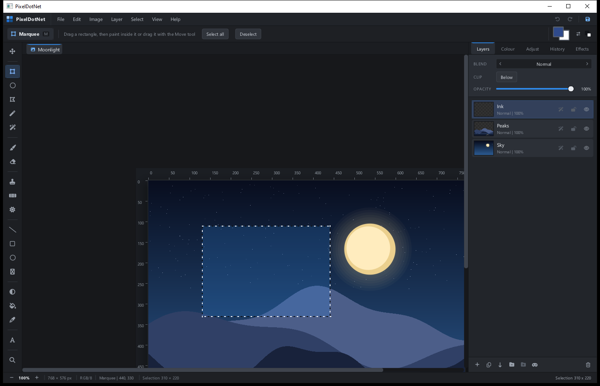
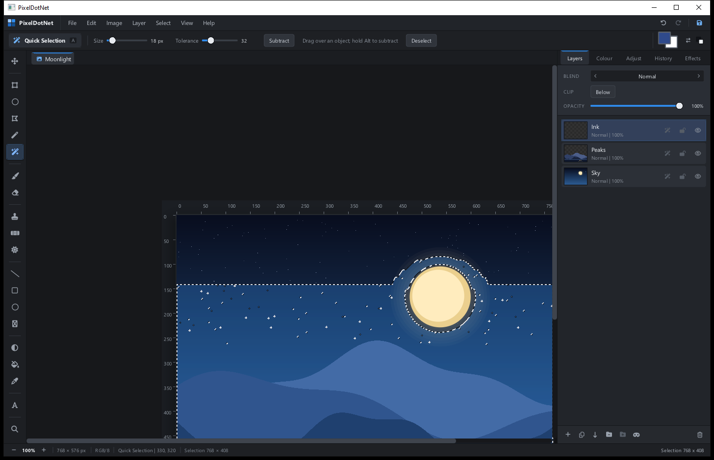
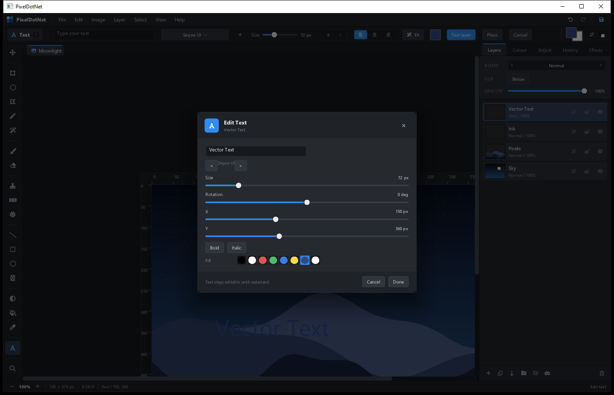

Tools
Every tool lives in the rail on the left. Pick a tool, check the options bar, then use the canvas. This chapter explains what each tool does and how to get good results from it.
How tools work
The tool rail is ordered roughly by purpose. The top group moves things, the next group makes selections, then comes painting, repair, shapes, fills, text, and zoom. You can also press a single letter to switch tools without touching the rail.
After you pick a tool, the options bar at the top shows its settings. These settings are remembered while the app is open, so you can switch back and forth without resetting everything each time.

Move
Shortcut: V
The Move tool drags the pixels on the active layer, or the selected pixels if a selection exists. Think of it as sliding one sheet of glass around without changing the other sheets.
- Drag anywhere on the canvas to move the active layer's content.
- If a selection is active, only the selected pixels move, leaving a transparent hole behind.
- Dragging outside a selection still moves the active layer's entire content.
- PixelDotNet does not nudge with the keyboard, so drag with the mouse for precise placement.
Selection tools
The selection tools create a stencil. Everything you do next is limited to the selected area until you deselect.
Marquee
Shortcut: M
Drag a rectangle. Release to finish the selection. Use the mode buttons in the options bar, or hold Shift or Ctrl to add another area, and hold Alt to subtract an area.
Elliptical Select
Shortcut: Q
Drag a bounding box and the program selects the ellipse inside it. The modifier keys work the same as the Marquee: Shift or Ctrl adds, Alt subtracts.
Lasso
Shortcut: F
Draw a freehand outline around a subject. When you release the mouse, the outline closes itself. This is good for rough, organic shapes. Use the modifier keys to add or subtract.
Magic Wand
Shortcut: W
Click a colour and the wand selects similar pixels on the active layer. Tolerance controls how different a pixel can be and still count as a match. Contiguous limits the selection to the connected area you clicked.
- Use a low tolerance for flat colours and line art.
- Raise tolerance for skies, gradients, and photos.
- The wand samples the active layer, so select the right layer first.
Quick Selection
Shortcut: A
Paint over an object and the selection grows through similar connected pixels. It is the fastest tool for cutting out a subject from a fairly clean background.
- Size sets how much area each dab samples.
- Tolerance sets how different a neighbouring pixel can be and still join the region.
- Turn on Subtract, or hold Alt, to remove areas from the selection.
- Start with a small brush on a clear edge. The region often spreads much farther than the dab itself.


Selections are explained in much more detail in Selections and masks.
Brush and Eraser
Brush
Shortcut: B
The Brush paints with the foreground colour. It has three main settings:
- Size is the diameter in document pixels. The on-screen ring shows it.
- Hardness controls the softness of the edge. A high value gives a crisp stamp. A low value gives a soft airbrush.
- Opacity limits how much paint one stroke can add. Low opacity builds up gradually.
Strokes are rebuilt from a snapshot each time, so passing over the same spot inside one stroke does not double the paint. The selection clips every stroke.
Eraser
Shortcut: E
The Eraser removes paint from the active layer. On a normal layer it creates transparency. On the bottom background layer it paints white instead, because the background layer is always opaque. The size, hardness, and opacity controls work like the brush.
Clone, Heal and Dodge / Burn
Clone Stamp
Shortcut: C
The Clone Stamp copies pixels from one place to another.
- Hold Ctrl and click the place you want to copy from. This sets the source point.
- Paint where you want the copy to appear. The offset from the first stroke point is preserved.
- Set a new source whenever you need a fresh sample.
The source is captured when the stroke starts, so one clone stroke will not feed back into itself and smear.
Healing Brush
Shortcut: H
The Healing Brush also copies texture, but it shifts the sampled colour so its brightness matches the destination. That makes it excellent for removing small blemishes on skin, clouds, and other smooth areas. Use the same Ctrl-click source method as the Clone Stamp.
Dodge / Burn
Shortcut: J
Dodge lightens and Burn darkens. Choose the mode in the options bar, then paint. Strength controls how quickly the tone changes. These tools do not change hue, so they are a safe way to add local contrast.
Line, Rectangle, Ellipse and Pen
Line
Shortcut: L
Drag from the start point to the end point. The options bar sets the line weight and opacity. The line uses the current brush size and is clipped by the selection.
Rectangle
Shortcut: R
Drag a box to draw a rectangle. In the options bar you can choose Fill or Stroke. Width sets the outline thickness. Opacity and the selection also apply.
Ellipse
Shortcut: O
Drag a box and the ellipse is drawn inside it. Fill, Stroke, and Width work exactly like the Rectangle tool. Hold Shift while dragging for a perfect circle or square.
Pen
Shortcut: P
The Pen builds a path point by point. A finished path becomes an editable path layer, which can be filled, outlined, or used as a text baseline.
- Click to add a corner point.
- Drag while placing a point to pull curve handles. The two handles stay symmetrical.
- Click the first point again, or press Enter, to close the path.
- Press Esc to cancel the path in progress.
After the path is created, use Edit Nodes in the Pen options or Layer > Edit Path Nodes to adjust it. Click a segment to add a node, drag anchors and handles to reshape, and use the Add Node and Delete Node buttons for precise edits.

Gradient and Paint Bucket
Gradient
Shortcut: G
Drag from the start point to the end point to make a linear gradient between the foreground and background colours. The direction and length of the drag set the ramp. Opacity controls strength and the selection clips the result.
- Press X to swap the two colours and reverse the gradient.
- A short drag makes tight bands. A long drag makes a gentle fade.
Paint Bucket
Shortcut: K
The Paint Bucket flood-fills the connected region you click with the foreground colour. Tolerance decides how different a neighbouring pixel can be and still be filled. Low tolerance respects hard edges. High tolerance crosses soft gradients and scanned line art.
Eyedropper
Shortcut: I
Click any visible pixel to make its colour the new foreground colour. The eyedropper samples the composite, which means it sees the final result of all visible layers, not just the active one. The status bar shows the picked hex value.
The Colour panel
The Colour tab on the right is where you choose colours precisely. It edits the colour that matches the current focus.
- The large spectrum sets saturation and brightness. Click or drag inside it to pick a colour.
- The vertical hue strip changes the base hue.
- The hex value and the R, G, and B numbers show the exact colour. You can read them for matching a brand colour.
- The three sliders edit the red, green, and blue channels directly.
- The target buttons switch between the text Fill, Outline, and Shadow colours when the Text tool is active.
- Swap exchanges the foreground and background colours. Reset returns to black and white.
The foreground colour is the one used by the brush, bucket, shapes, and text. The background colour is used by the gradient and by the eraser on the background layer.
Text
Shortcut: T
The Text tool places live text. You can type a line, choose a font, set the size, alignment, bold or italic, and add outlines and shadows.
- Click on the canvas where the text baseline should start.
- Type in the text field in the options bar.
- Use the font picker, size field, alignment buttons, and FX panel to style the text.
- Drag the text handles to move, scale, or rotate the line.
- Press Place to commit the text, or Cancel to discard it.
Turn on Text layer before placing the text if you want to keep it editable. A text layer can be reopened later with Layer > Edit Text.... Text can also follow a path, which is covered in Shapes, paths and text.
The FX panel adds outlines and shadows. Presets set several effects at once, and the sliders refine them. For a neon look, turn on Outer Glow with a bright colour and a wide blur. For a retro look, use a warm fill with a dark, slightly offset shadow.
The + button next to the font picker downloads a font from cdnfonts. Paste a font URL or family name and press Add. The family appears in the picker for the rest of the session.

Zoom
Shortcut: Z
Click the canvas to zoom in. Right-click to zoom out. Zooming changes only the view, never the image pixels.
- Ctrl+scroll zooms around the pointer.
- Ctrl++ and Ctrl+- step through the zoom stops.
- Ctrl+0 returns to 100 percent, one document pixel per screen pixel.
- Hold the space bar or middle mouse button and drag to pan when you are zoomed in.